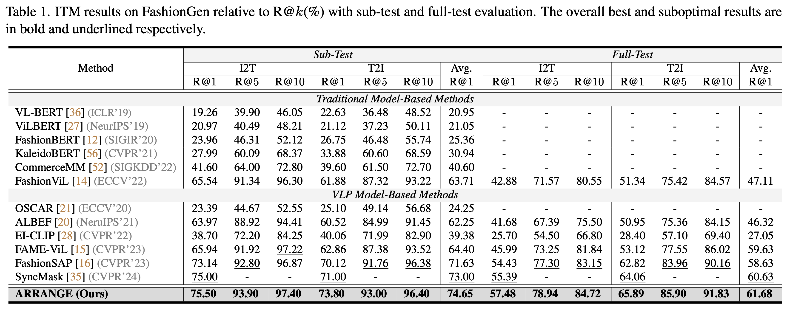
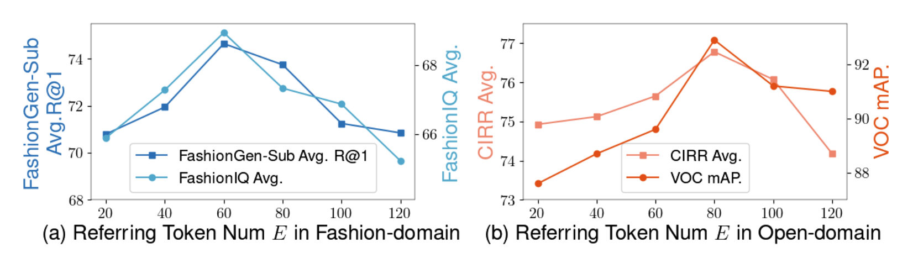
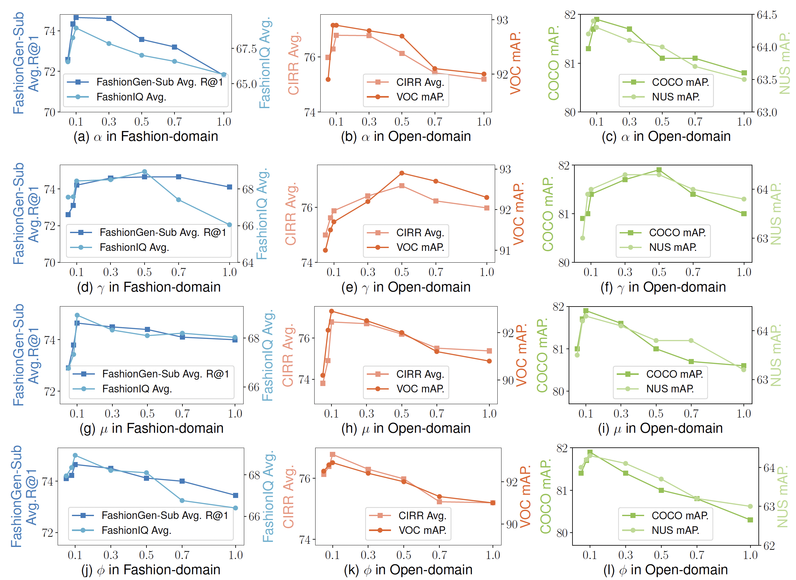
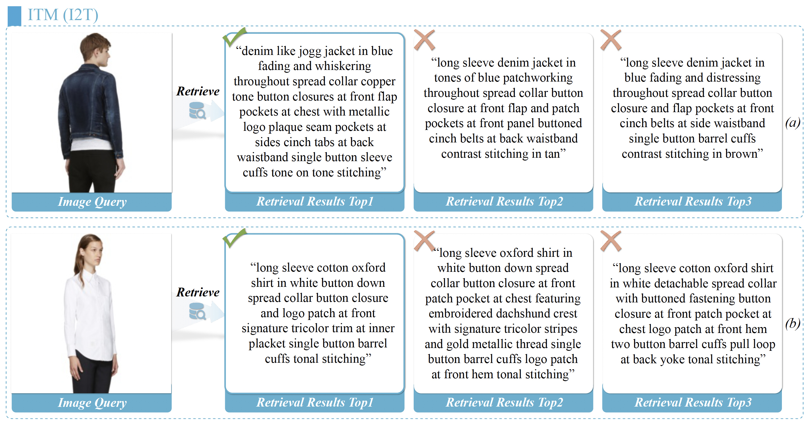
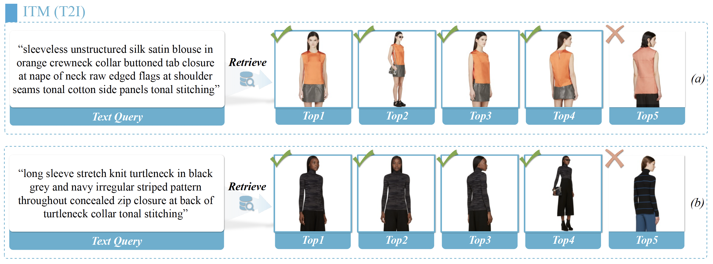
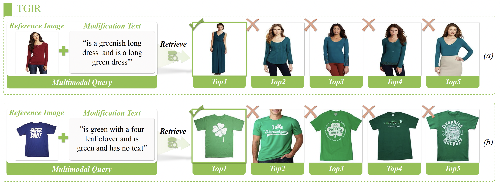
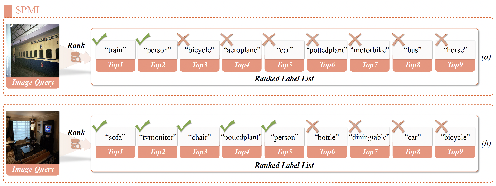

Experiment


Sensitivity to Referring Token Number E on (a) fashion-domain and (b) open-domain datasets.

Sensitivity to α, γ, μ, ϕ on fashion-domain and open-domain datasets.
Qualitative Examples
Attention Visualization on (a) ITM, (b) TGIR, and (c) SPML tasks.

Qualitative examples on I2T sub-task of ITM task. The ground truths are marked with checkmarks.

Qualitative examples on T2I sub-task of ITM task. The ground truths are marked with checkmarks.

Qualitative examples on TGIR task. The ground truths are marked with checkmarks.

Qualitative examples on SPML task. The ground truths are marked with checkmarks.